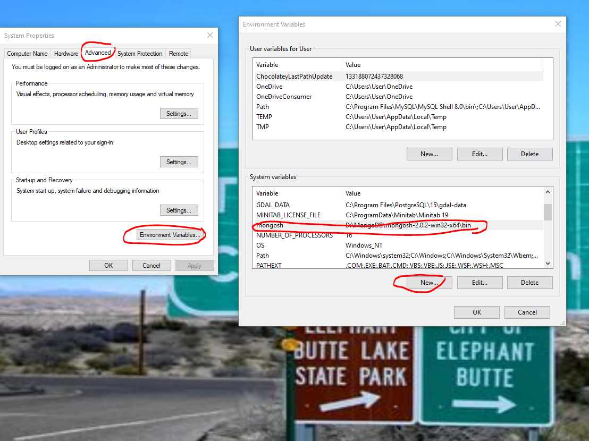
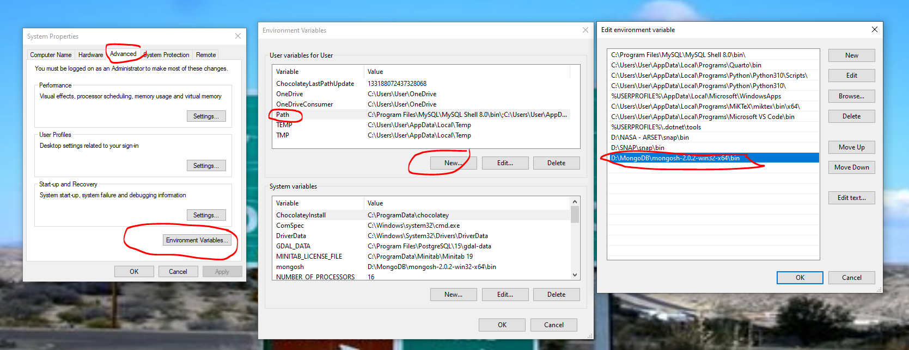
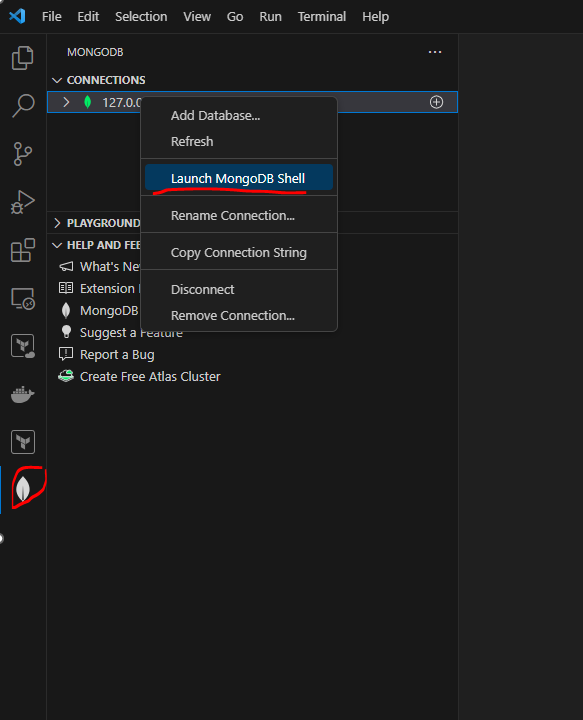

https://www.mongodb.com/MongoDB
If you are conversant with Python and prefer the JSON format to the tabular data (rows and columns) approach used by SQL then MongoDB might be just what you have been looking for.
Unlike relational database management systems MongoDB uses a NO (Not Only) SQL format to store and retrieve data.
MongoDB architecture
Data is grouped together in documents which comprise key:<value> pairs (like a Python dictionary) :
A collectionis a group of one or more documents :
A database is a group of one or more collections :
Installing MongoDB (and the Compass GUI)
MongoDB comes with Compass which is a graphical user interface (GUI) which provides a visual alternative to the shell.
Installing the MongoDB shell (mongosh)
Once downloaded extract the files from the zip file and copy the file path as indicated in the graphic below:
We will need to copy this file path to our environment variables for :


Then, go back to the folder and open the executable. To establish a connection type mongosh into the console:
You can clear the screen using the cls command. Refer to the documentation for a complete guide to the available commands.
Using the shell within Visual Studio Code
Once installed click on the MongoDB extension icon (leaf) and initially you may have to copy the connection url into the search bar. In my case:
mongodb://127.0.0.1:27017/mongodb?directConnection=true&serverSelectionTimeoutMS=2000&appName=mongosh+2.0.2
Creating and dropping databases in the shell
Inserting records
.sort() - equivalent to ORDER BY clause in SQL
Ascending order
Descending order
.limit() - equivalent to LIMIT clause in SQL)
We can use this to quantify how many documents we wish to be returned. For example if we wish to find the student with the highest gpa score, we first sort by gpa in descending order (-1) and specify a limit value of 1 :
.find( {query}, {projection}) - equivalent to the WHERE clause in SQL
In the above example we only specified the {query} parameter, however we can also include a {projection} parameter to specify which fields to return. For example, say we want the names of all of our students. The first parameter {} will give us all records, whilst the second parameter specifies that we only want the name fields :
.updateOne({filter}, {update})
The $set operator replaces the value of a field. Say for example we wish to update Jerry’s record to include an address :
Updating by unique ObjectId
What if we have more than one student named Jerry? Well, we don’t want to update the records for all students named Jerry, we can use the unique identifier ObjectId :

Removing fields
To remove a field we can use the $unset operator and set the new value as an empty string "":
The fullTime field has been successfully removed.
updateMany({filter}, {update})
Say we wanted to set every student’s fullTime status to False, or True if the field doesn’t exist yet):
Exporting
Before we go ahead and show how to delete a collection let’s first back it up by exporting :
Deleting documents
.deleteOne()
Say we wanted to remove Kramer (I can’t imagine why!) from the database :
.deleteMany()
Let’s delete any one with fullTime status of false :
Just like that Jerry is gone!
As another example let’s delete any documents which don’t have a registerDate field (in our case this means everyone) :
Importing
Let’s restore our data from the backup :
Comparison Operators
Not equal to $ne
less than $lt
less than or equal to $lte
greater than $gt
greater than or equal to $gte
between
is in $in [" ", " " ]
is not in $nin [" ", " " ]
Logical Operators
And $and: ["{ }", "{ }"]
Or $or: ["{ }", "{ }"]

not $not
For example, say we wanted to find all students under 30, we could construct the query using $lt:30 but this would not return null values. If we want to include null values we should instead use the $not operator :

Indexes

A linear search is going to take a really long time if there are hundreds of thousands or millions of documents to search through.
We can speed the look up process by applying an index.

Getting and dropping indexes
For a more detailed discussion on the subject of MongoDB indexes see this Allegro Tech Blog post.